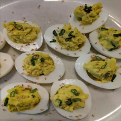

Japanese Wasabe Deviled Eggs

Cook: 15 minutes
Additional: 15 minutes
Total: 50 minutes
Prep: 20 minutes
Servings: 16 servings
Yield: 16 deviled eggs
Ingredients
- 8 eggs
- 1/3 cup mayonnaise
- 3 tablespoons minced green onions
- 2 teaspoons rice wine vinegar
- 1 1/2 teaspoons wasabi paste
- coarse salt
- 1/2 cup fresh pea shoots, or as needed
- 16 pickled ginger slices
Directions
- Place eggs in a saucepan; cover with water. Bring to a boil,
remove from heat, and let eggs stand in hot water for 15
minutes. Remove eggs from hot water, cool under cold running
water, and peel.
- Cut each egg in half lengthwise; place egg yolks in a bowl.
Mash yolks with a fork until smooth; stir in mayonnaise, green
onions, rice wine vinegar, and wasabi paste. Season with
salt.
- Arrange egg white halves cut-side-up on a serving platter.
Spoon yolk mixture into whites; garnish each egg half with
pickled ginger and pea shoots.
Nutrition Facts
Per Serving: 74 calories; protein 3.3g;
carbohydrates 1.4g; fat 6.1g; cholesterol 94.7mg; sodium
109.6mg.